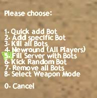
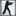

Voici un dossier assez complet sur
les PodBot :
 Introduction
Installation Commandes Waypoints Fichiers Introduction
Installation Commandes Waypoints Fichiers

 Introduction :
Introduction : 
Intro : Vous en avez marre de vous faire frager
dés les 30 première secondes sur le net car vous
êtes un noob et que vous ne connaisez pas encore toutes
les bases de Counter Strike, alors les Bots ( Robots pour les
Non-Anglophone ) sont faits pour vous.
Pour ceux qui ne connaissent rien ( non, tu n'es pas visé
zaza! ), les bots sont des ennemis gérés par votre
ordinateur sans avoir besoin d'être connecté (
ce qui ravira les 56ko à forfait limité :-)
Installation
:
L'installation des PodBots n'est vraiment pas très
compliqué !
1°) Vous téléchargez le fichier
d'installation :
-- IcI --
2°) Vous lancez ce fichier et suivez les différentes
étapes
3°) Vous lancez le racourci PodBot qui s'est créé
sur votre bureau
Commandes
:
Tout d'abord, pour commencer avec les bots, appuyez
sur la touche "=" pendant une partie, ce menu apparait
:
 |
1: Ajoute
un bot à difficulté aléatoire
2: Ajoute un bot spécifique
( team, niveau ... )
3: Tue tous les bots,
utile lorsque vous avez marre d'observer un 1 Vs 1. Perso,
je l'utilise dés que je meurs !
4: Pareil que
le précédent, sauf que là tout le monde
y passe, même vous !
5: Cela sert
à faire un "Moi tout seul contre eux tous !"
6: Kicke un bot au hasard
7: Kicke tous les bots
8: Définis les
armes que les bots ont le droit d'utiliser. |
Si cela ne vous suffit pas, il existe d'autres commandes à
utiliser dans la console :
 Botchat
on/off : Autorise les bots à parler ou non Botchat
on/off : Autorise les bots à parler ou non
minbotskill
<0-100> : Définit le niveau minimum des
bots aléatoires
maxbotskill
<0-100> : Définit le niveau maximum des bots aléatoires
addbot
[niveau] [équipe] [nom] : Ajoute un bot spécifique
ex : addbot 85 1 le_Chat >
crée un terro de niveau 85 qui se nomme le-Chat
detailnames <on|off> : Active le l'affichage
du niveau du bot ainsi que [POD]
shootthruwalls <on|off> : Si la variable
est sur ON, les bots tirent à travers les murs
LES FUN - MODES
:
Omg
imonmars -> Baisse la gravité, vous êtes
dans la Lune quoi !
Omg
imhaunted -> Les bots ressemblent à des fantômes,
ils sont 1 peu transparents
Omg
itstoodark -> Les bots sont illuminés ( Ils
brillent koi ! )
Omg
itsnewyear -> Les bots ressemblent à des bougies
sur un gateau
Omg
tronisback -> Les Bots comme dans Tron, les Terros
en rouge, les Ct en bleu.
Omg
imsober -> Désactive tous les fun-modes
Vous pouvez bien sur utiliser, plusieurs de ces
modes ensembles. ( Utilisez les en rouges-transparents-illuminés
! C cool :-)
Waypoints
:
C koi ce truc ? Pour faire simple, les waypoints
sont tout simplement les chemins utilisés par les PodBots pour
se repérer dans une map.
Pendant le jeu, les waypoints ne sont pas visibles. Sans les waypoints
les bots iraient aléatoirement sur la carte et seraient
certainement coincés dans le même coin.
Dès l'installation du pack, certains waypoints
sont déjà présent, d'autres demandent soit
à être créés, soit à être
téléchargé sur le net.
Ils se trouvent dans le dossier "C:\SIERRA\Half-Life\cstrike\PodBot\Wptdefault\"

Si vous voulez créer vos waypoints vous même : visitez
cette page
Si vous voulez télécharger vos waypoints ( c'est
préférable ) , dirigez vous vers ce superbe
site : --
ICI --
Fichiers
:
BOTchat
: Un fichier qui change les dialogues des bots en + fun
Copier
le txt dans "C:\SIERRA\Half-Life\cstrike\Podbot\"
Télécharger
( Taille : 5ko )
BOTskill : Un fichier qui vous permet d'augmenter
la force des bots
Copier
le txt dans "C:\SIERRA\Half-Life\cstrike\Podbot\"
-
Fichier 1 : Bot extrèmement fort : Télécharger
( Taille : 1ko )
-
Fichier 2 : Bot très fort : Télécharger
( Taille : 1ko)
|